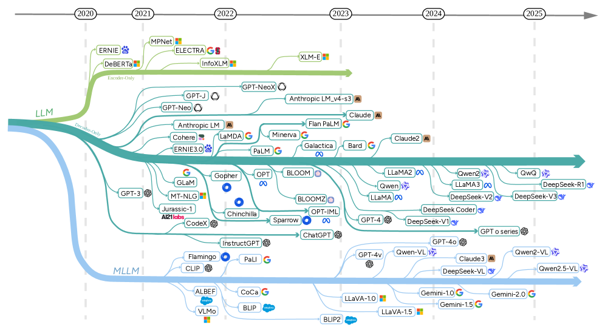

本論文は、自動運転における軌跡予測（Trajectory Prediction）への大規模基盤モデル（Large Foundation Models: LFMs）——特にLLMとマルチモーダルLLM（MLLM）——の適用を体系的にレビューしたサーベイである。著者はWei Dai、Shengen Wu、Wei Wu、Zhenhao Wang、Sisuo Lyu、Haicheng Liao、Limin Yu、Weiping Ding、Runwei Guan、Yutao Yueで、arXiv 2509.10570として公開されている。
軌跡予測は自動運転における重要な機能であり、車両や歩行者といった交通参加者の将来の動作パスを予測することで走行安全性を確保する。従来のディープラーニング手法は精度を向上させてきたが、以下の根本的な限界に直面している。
著者らはLFMが軌跡予測に「パラダイムシフト」をもたらしていると指摘する。LFMは軌跡予測を「低レベルのパターン認識タスク」から「意味的理解と認知的推論に基づくもの」へと転換させる。
タスクは車両の軌跡予測と歩行者の軌跡予測の2つに分けられる。
連続的な動作座標を離散的な言語表現に変換する手法である。STG-LLMのようなシステムは時空間グラフデータをトークン化し、位置・速度・行動意図を自然言語としてエンコードした構造化プロンプトを使用する。
視覚（カメラ・LiDAR）、言語（指示・説明文）、軌跡のモダリティを統一エンコーダで統合する。DiMAのようなフレームワークは共有シーンエンコーダで視覚入力をBEVトークン埋め込みに変換し、融合点として活用する。
Chain-of-Thought（CoT）プロンプティングを活用して予測を検証可能な推論ステップに分解する。「赤信号のため減速する」のような交通規則を言語的制約として強制し、明示的な正当化を必要とする。CoT-Driveは複雑な相互作用を「統計的シーン分析、マルチエージェント相互作用評価、衝突リスク定量化、軌跡予測」という順次フェーズに分解する。
プロンプトエンジニアリングでは、履歴状態を浮動小数点値または離散トークンとしてエンコードし、「左折」のような行動コマンドを自然言語指示として提供する。道路トポロジーや信号状態はベジェ曲線を用いてテキスト表現される。
DSDriveのようなエンドツーエンド統合フレームワークは「言語駆動の明示的なCoT推論による認知的意思決定」を実現し、解釈可能な軌跡予測を直接出力する。
LLMは歩行者予測において独自の優位性を発揮する。
入力表現では、連続座標をランク-k SVDで文字列に離散化し、元の軌跡から「95%以上の動作意味論を保存」する。
本サーベイは、LFMが軌跡予測において統計的パターンマッチングを超えて「より解釈可能でコンテキスト認識型の環境理解が可能なシステム」へと向かう本物のパラダイムシフトを体現していることを示している。推論ベース予測（CoT）、生成的検証、ハードウェア最適化の収束は、自動運転スタックにおける軌跡予測が意味的理解を活用しつつリアルタイム車載制約を維持する方向へ発展することを示唆している。